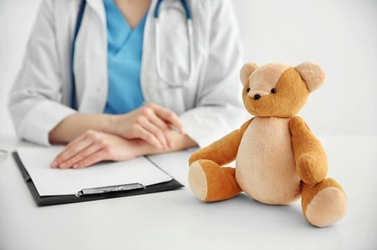
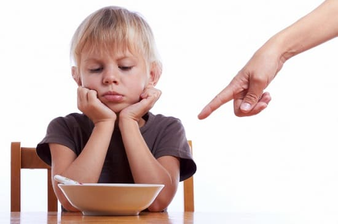

За прошедшие двадцать лет — это нарушение много изучалось. В обществе, где все больше и больше ценятся супермодели, которых подростки видят в печатных изданиях, телевизоре, кино, все большее количество людей попадают в зону риска развития этой разрушительной болезни. Подростки и молодежь, особенно девушки, находятся под мощным прессингом общественного мнения, требующего «выглядеть похоже».
Наиболее высокий риск развития анорексии — у девочек-подростков. Однако сейчас она все чаще выявляется во все более младшем возрасте, так как девочки подвергаются воздействию различных массмедиа, внушающих им необходимость похудания. Но и среди мальчиков-подростков анорексия диагностируется все чаще.
ПРИЗНАКИ И СИМПТОМЫ
Возможные признаки, которые могут подсказать, что ваш ребенок — в группе риска по развитию анорексии:
• отсутствие интереса к любой пище;
• внезапное необъяснимое снижение веса или крутое падение графика изменения массы тела;
• вес больше, чем на 5 процентов ниже среднего для этого возраста и роста;
• внешние признаки недостаточного питания. Подросток выглядит как «кожа да кости»;
• сухие, ломкие волосы;
• сухая кожа;
• появление сухих белесых волос — лануго, особенно на коже щек;
• подросток зациклен на весе и внешности;
• подросток «слишком усердствует», выполняя упражнения. Девочка полагает себя обязанной постоянно заниматься в спортзале или каким- либо интенсивным спортом, например бегом, — причем намного больше, чем это необходимо для здоровья;
• месячные у девушки становятся нерегулярными или вообще прекращаются, либо менархе не наступает в том возрасте, когда положено;
• постоянные головокружения и обмороки;
• повторяющиеся необъяснимые приступы тошноты;
• внезапные судороги;
• признаки депрессии или тревожности.
Если у вашего ребенка или подростка есть какой-либо из этих признаков, проконсультируйтесь со своим педиатром.
ЧТО ДЕЛАТЬ
Поговорите со своим врачом. Если педиатр подозревает, что у вашего ребенка могут быть признаки анорексии, необходимо сделать анализ крови для исключения тяжелых заболеваний. У страдающих анорексией могут быть глубокие и опасные для жизни дефициты некоторых питательных веществ и солей, особенно калия и натрия, которые могут привести к развитию судорог и даже к смерти. Лечение анорексии должно быть многосторонним, с участием различных специалистов. Педиатр должен тщательно следить за состоянием здоровья пациента, визиты к нему должны быть частыми, включать контроль массы тела, роста и анализов крови на электролиты.

СОВЕТ ДОКТОРОВ СИРС: ИДЕАЛЬНЫЙ ВЕС Семена анорексии могут быть посеяны в раннем возрасте. Очень важно, чтобы родители демонстрировали детям правильное здоровое отношение к их телосложению, например, говоря: «Мне нравится, как ты выглядишь». Часто одержимость весом и внешним видом развивается у детей, следующих примеру родителей или друзей. Учите своих детей, что значит «здоровый вес». Собственным примером поощряйте навыки правильного питания, физических упражнений. Не забывайте о компании ровесников. Поощряйте дружбу с теми, кто не слишком поглощен своей внешностью, весом и модой. |
Консультируйтесь с диетологом. Диетолог необходим, чтобы тщательно контролировать ежедневное потребление калорий больным и давать советы, как правильно питаться. Очень важно, чтобы у специалиста был опыт работы с больными анорексией.
Консультации психотерапевта. К лечению анорексии также должны быть привлечены психолог и/или психиатр. Анорексия всегда сопровождается признаками депрессии или тревожного расстройства, которые необходимо выявлять и лечить. Люди, задающие анорексией, имеют более высокую склонность к самоубийцу, которую следует учитывать. Кроме того, доказана эффективность определенных видов поведенческой терапии в лечении анорексии.
Увы, даже с помощью самого лучшего лечения анорексию трудно контролировать. Часто это — пожизненная болезнь, с которой личности приходится вести постоянную борьбу за право видеть себя иначе и жить здоровой жизнью. К счастью, за последние двадцать лет мы стали намного эффективнее диагностировать и лечить эту изнурительную болезнь.
СОВЕТ ДОКТОРОВ СИРС: ЖИРНАЯ ПИЩА И ЖИРОВАЯ ТКАНЬ - ЭТО ХОРОШО! Девушек-подростков буквально бомбардируют неправильным с научной точки зрения утверждением, о «жирная пища — это плохо», неправда! Им также твердят, что «жир на теле — плохо». Снова ложь! Объясните своему подростку, что есть продукты с полезными, «хорошими» жирами (например, морепродукты, оливковое масло, льняное, ореховые масла, авокадо). Хорошие жиры необходимы для работы всех органов тела, особенно мозга, и для нормального развития целом. В то время как прилагательное «худой» стало чуть ли не синонимом слова «здоровый», объясните и покажите своему подростку, что «худой» означает лишь достаточное количество жировой ткани в ее теле — не слишком много и не слишком мало. «Если у тебя не будет достаточного количества жировой ткани, ты не сможешь стать женщиной. Жировая ткань содержит женский гормон эстроген, который помогает расти твоей груди, без которого не начнутся менструации и не появятся соблазнительные женские округлости. В конце концов, если бы у мамы не было жировой ткани, то тебя бы здесь не было: я бы не смогла зачать и выносить тебя». |

Здоровье ребенка от докторов Сирс / Сирс У. и др.